하나가 아니라 네 갈래다
Kass, G. V. An exploratory technique for investigating large quantities of categorical data. Applied Statistics 29(2), 119–127
Breiman, L.; Friedman, J. H.; Olshen, R. A.; Stone, C. J. Classification and Regression Trees. Wadsworth & Brooks/Cole
Quinlan, J. R. Induction of Decision Trees. Machine Learning 1(1), 81–106
Quinlan, J. R. C4.5: Programs for Machine Learning. Morgan Kaufmann
갈리는 지점은 하나 — 주머니의 혼탁도를 무엇으로 재는가. CART 는 지니, ID3 계열은 엔트로피.
회귀는 어디서나
같은 기울기다
계수 a 는 하나뿐이다. x₁ 이 1 늘 때 y 가 얼마나 변하는지가 데이터 전 구간에서 똑같다.
질문을 던져 주머니를 나눈다
전제 하나 — 답이 0 또는 1 로 나뉘어야 한다. 질병 유무, 소멸위험 여부처럼.
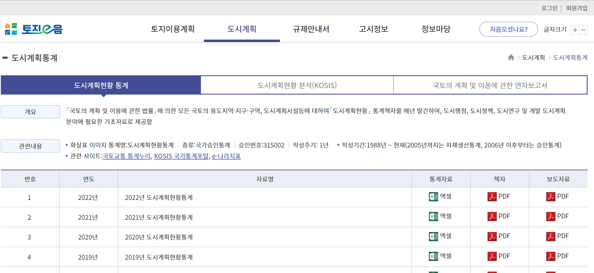
도시계획
현황통계
국토교통부가 매년 발표한다. 전국 도시의 계획인구 · 시가화용지 등.
인구감소지역
지정
행정안전부 지정 89곳. 감소 1 / 비감소 0 으로 놓으면 이진분류 문제가 된다.
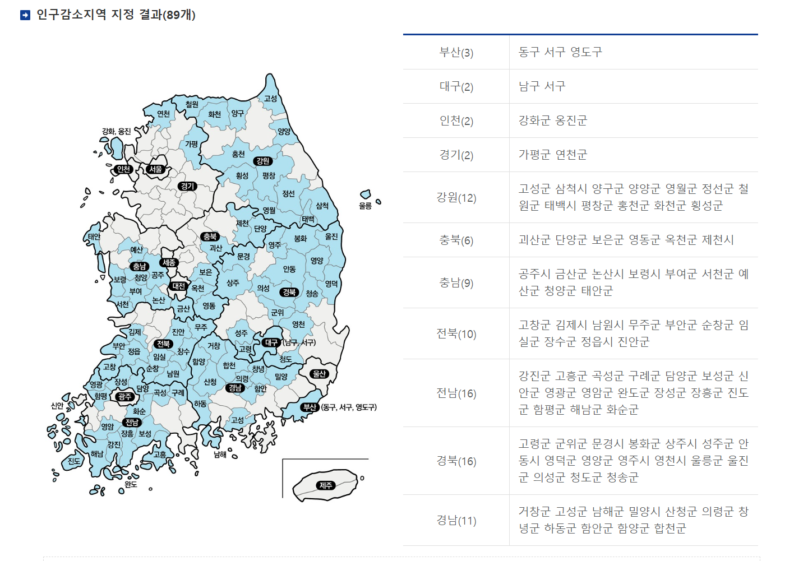
120개 도시
특별시·광역시는 당연히 감소지역이 아니므로 뺐다.
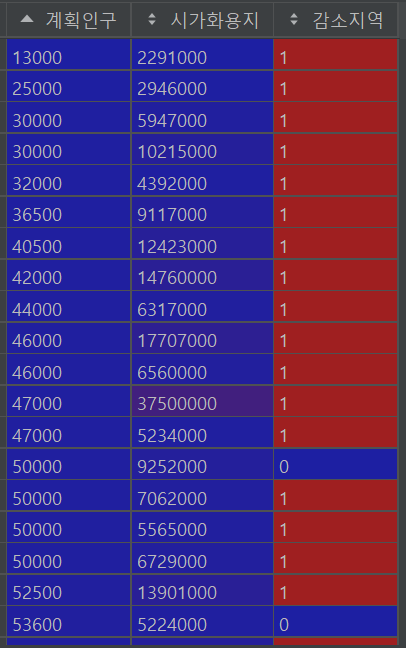
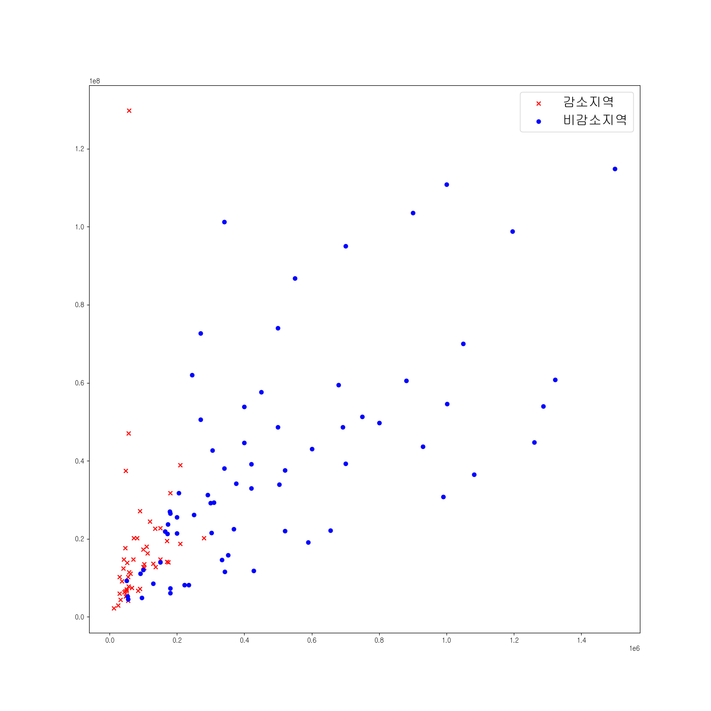
첫 가지를 뭘로 나누지?
구조는 단순하다. 어려운 건 기준을 정하는 일이다. 계획인구? 시가화용지? 얼마를 기준으로?
한쪽 주머니에 0 이, 다른 쪽에 1 이 모이면 완벽하다. 그 순수도를 수치화할 공식이 필요하다.
1980년대의 계산기로 돌아가야 했다. 이 제약이 알고리즘의 모양을 정했다.
지니 인덱스
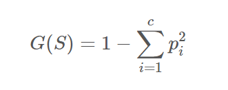
한쪽으로 다 모이면 0, 반반이면 0.5.
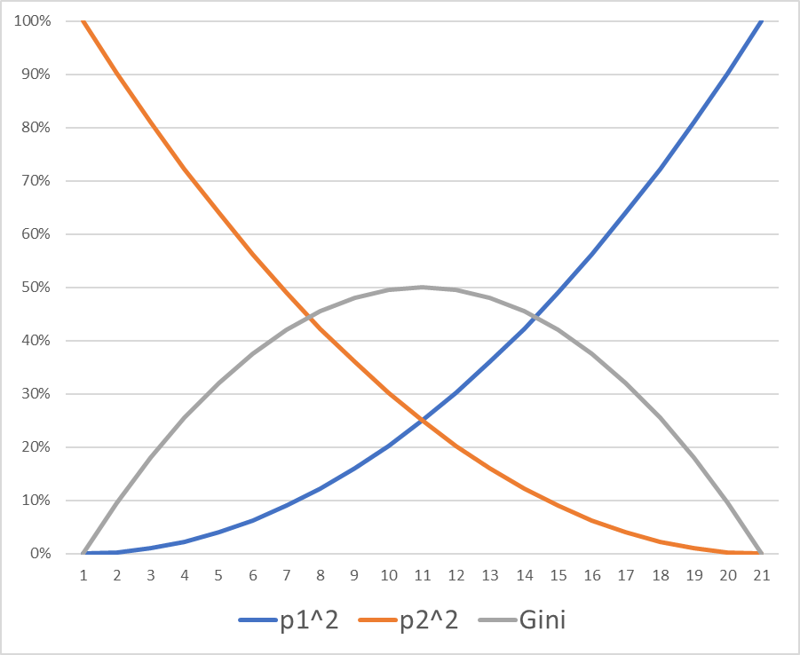
나누면 주머니가 둘
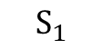
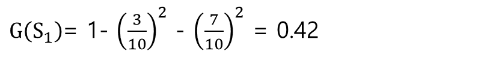
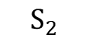
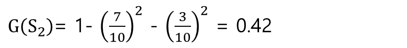
그런데 둘을 어떻게 하나로 합쳐 이 분할을 평가하나?
개수로
가중평균한다
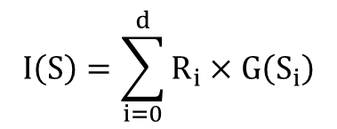
나눠서 얼마나 맑아졌나
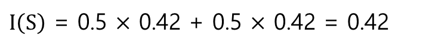
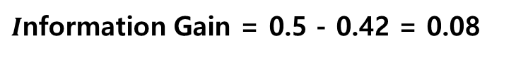
이 0.08 이 가장 큰 분할을 고르면 된다. 남은 건 후보를 전부 세는 일뿐이다.
후보를 전부 세어 본다
04_Dtree.ipynb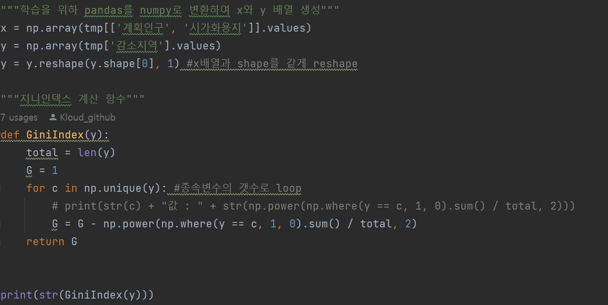
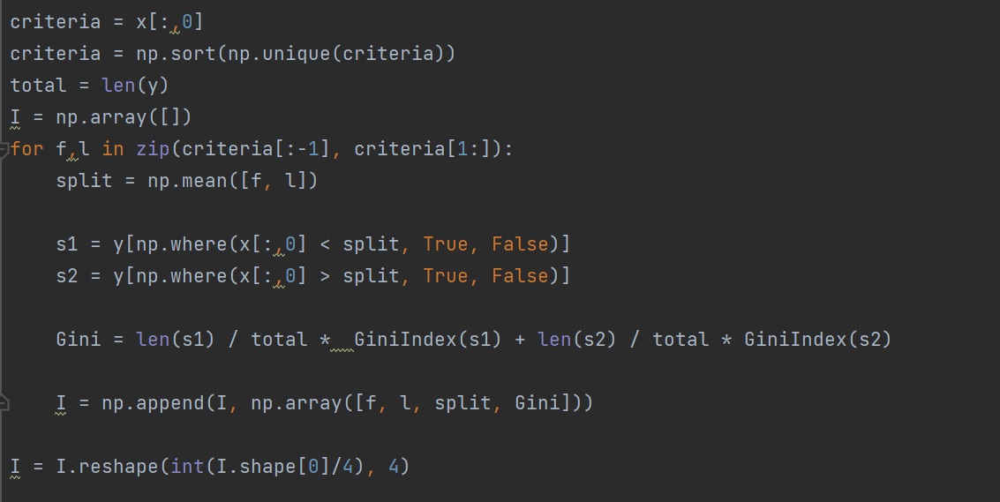
정렬한 뒤 이웃한 두 값의 가운데를 기준으로 잡는다 — 기준선에 데이터가 걸리면 안 되기 때문이다.
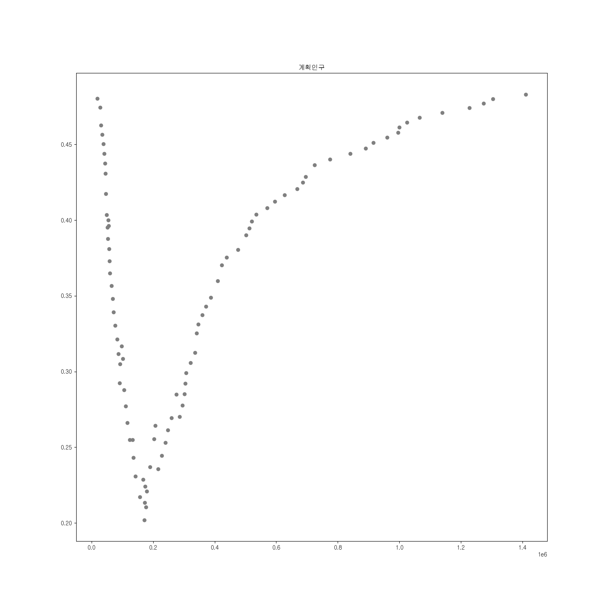
내려갔다가
다시 올라간다
가장 낮은 지점이 그 변수의 최선이다.
끝으로 갈수록 한쪽 주머니가 비어 원래 상태로 돌아간다 — 그래서 다시 올라간다.
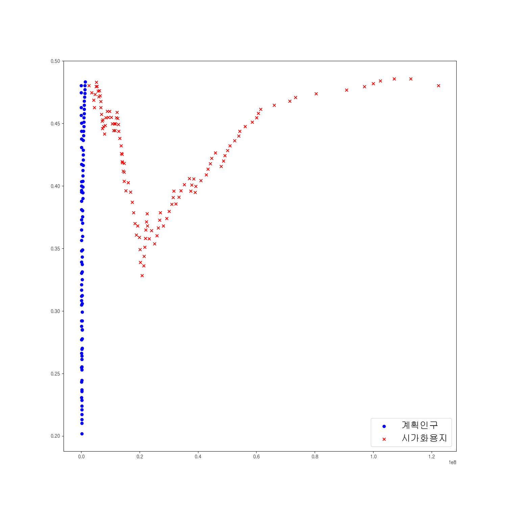
더 깊이 내려가는
변수가 이긴다
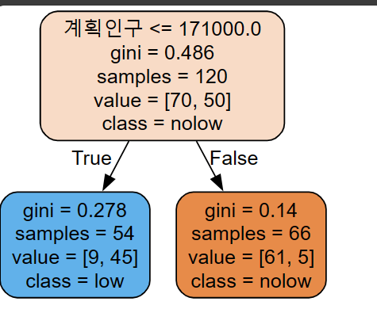
손으로 구한 것과
같다
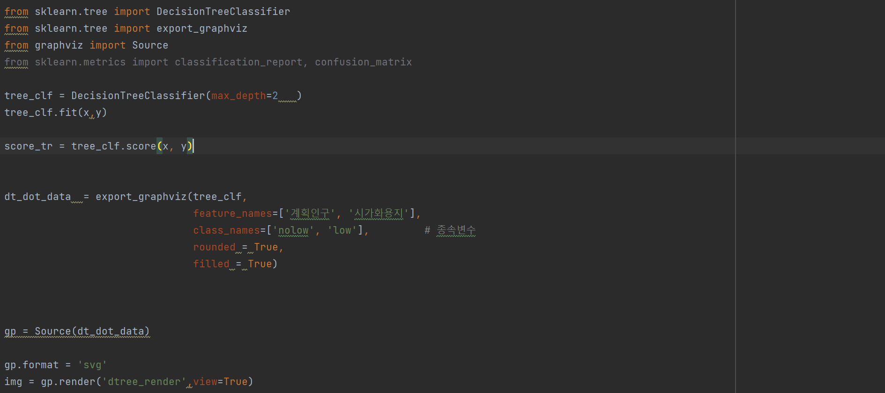
새 도시의 계획인구가 17만 1천보다 작으면 — 학습 데이터가 그렇게 말하니 감소 도시로 판정한다. 이것이 “학습”이다.
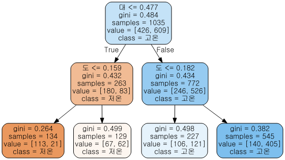
줄인 만큼이
그 변수의 공
S-DoT 센서 반경 200m 안의 대지(대)·도로(도) 면적 비율로 고온/저온을 가른 나무.
아래층은
비중을 곱한다
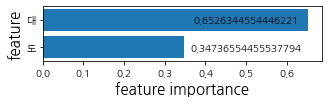

계획인구가
압도적이다
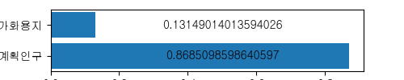
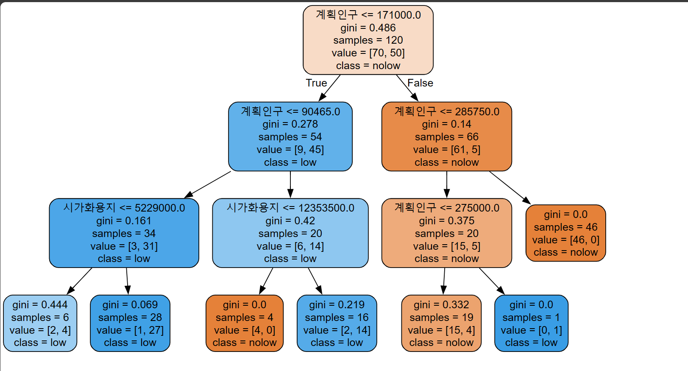
어디서 멈출 것인가
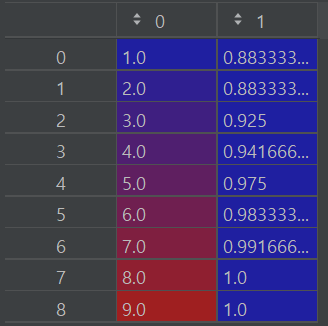
깊이 8 이면 훈련 정확도가 이미 1.0 — 전부 외운 것이다.
미래를 예측하려면 둘이 비슷하면서 높은 지점을 찾아야 한다.
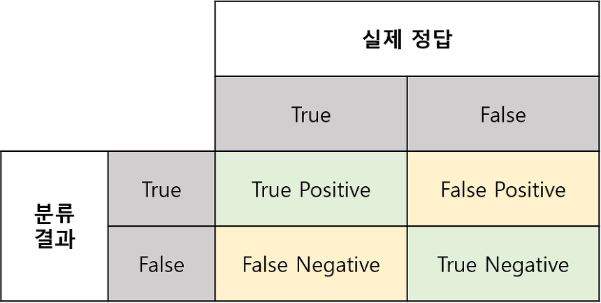
맞고 틀림의
네 칸
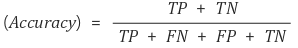
대각선의 비율이 정확도다. 그런데 이것만으로는 부족한 경우가 많다.
맞다고 했으면
맞아야 한다
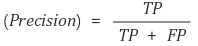
몇 명 놓치더라도, 내가 맞다고 한 건 무조건 맞아야 하는 상황.
한 명을 격리 병동에 두는 데 수천만 원이 든다. 아닌 사람을 가둘 수 없다.
카드를 막고 통장까지 막는다. 100건 막아 20건이 오판이면 그 20명이 가만히 있지 않는다. 99.999% 를 요구한다.
100명한테 맞혀서 50명이 불필요했어도 괜찮다. 안 맞은 사람 중에 환자가 있으면 안 되기 때문이다.
웬만하면 다 양성이라고 하면 된다. 그래서 정밀도와 함께 봐야 한다.
있는 건
다 잡아야 한다
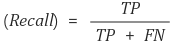
틀려도 비용이 싼 대신 놓치면 안 되는 일에 쓴다.
“그냥 다 아니다” 로 99.75%
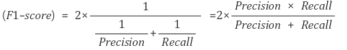
한쪽으로 치우친 데이터에서는 정확도가 거짓말을 한다. 조화평균이라 소수 클래스를 무시할 수 없다.
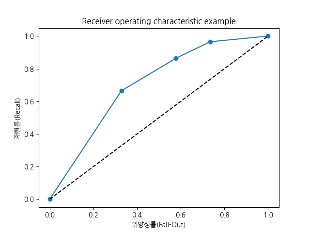
볼록할수록 좋다
적은 오탐으로 많이 잡아낼수록 왼쪽 위로 부푼다.
연속값이면 자를 바꾼다
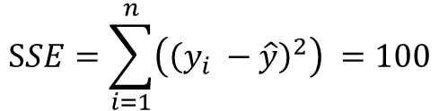
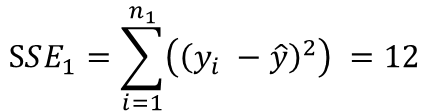
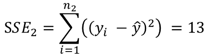
지니 대신 제곱오차합을 쓴다. 후보를 전부 세는 절차는 완전히 같다.
엔트로피라는
다른 자
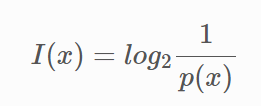
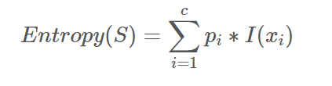
모양이 지니와 거의 같다. 어느 쪽이 낫다고 정해진 건 없고, 로그 연산이라 조금 더 무겁다.
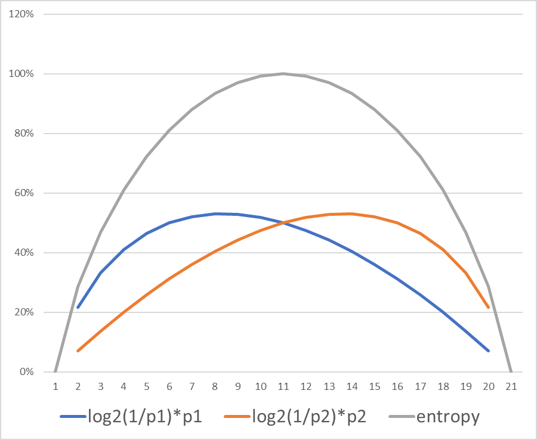